器材库 > 不可换镜头数码相机 > DSC-HX7V
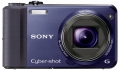
规格总览
发布日期
2011-01-05
厂家推荐价格
300.00 （美元）
3D拍摄
是
影像规格
影像传感器
Exmor R CMOS
影像传感器尺寸
1/2.3英寸
总像素
1680万
有效像素
1620万
静态图像格式
JPEG
静态图像尺寸
[16M]：4608×3456；[10M]3648×2736；[5M]2592×1944；[VGA]：640×480；[16：9]1920×1080
画幅比
4:3
短片格式
AVI, MPEG4
短片尺寸
[AVCHD]1920×1080@50i、1440×1080@50i；[MP4/AVI] 1440×1080@25fps、1280×720@25fps、640×480@25fps
防抖系统
光学防抖功能
镜头和对焦
镜头结构
10片/7组
非球面镜片
4片
焦距
4.3mm-42.5mm
等效35mm画幅焦距
25mm-250mm
最大光圈
f/3.5-f/5.5
光学变焦
10倍
数码变焦
40倍
最近对焦距离
IiAuto]广角：5cm；长焦：100cmcm
自动对焦系统
多点AF
对焦模式
9点/中心/单点/
AF辅助灯/光
有
手动对焦
不支持
曝光控制
测光模式
中央重点测光, 评价测光, 点测光
场景模式
自动/夜景/ Twilite人像/背光/背光人像/风景/微距/人像/婴儿/聚光灯/ 低光照
快门速度
iAuto：2- 1/1600s；程序自动：1-1/1600s ;[手动]30-1/1600s
曝光补偿
±2EV以1/3EV级调整
连拍
10fps
闪光灯
内置闪光灯
固定
闪光涵盖范围
[ISO自动]广角：0.05－4.8m；变焦：1.0－3.1m/[ISO3200]广角：最远达6.8m；长焦：最远4.4m
取景规格
LCD类型
彩色TFT LCD
LCD尺寸
3.0英寸
LCD像素
92.16万
文件输入/输出
记录媒介
MS/MS PRO记忆棒, SD/SDHC, SDXC
数据接口
USB
支持打印协议
DPOF
电源
电池
可充电锂离子电池NP-BN1
续航能力
290张/145分钟
外观
颜色
银色, 黑色, 红色, 蓝色
尺寸
101.6×57.6×28.6mm
重量
178g
其它
支持语言
英语, 捷克语, 丹麦语, 荷兰语, 芬兰语, 法语, 德语, 意大利语, 挪威语, 波兰语, 葡萄牙语, 西班牙语, 瑞典语, 土耳其语, 匈牙利语, 希腊语, 罗马尼亚语, 保加利亚语, 克罗地亚语
附件
电池NP-BN1；USB充电器（AC-UB1010B）；USB数据线；手腕带；光盘；电源线；图像浏览软件；AC适配器
该产品暂无存档的网友点评
产品图 / 样片
索尼 DSC-HX7V
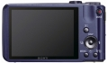
索尼 DSC-HX7V
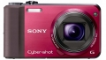
索尼 DSC-HX7V
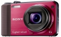
索尼 DSC-HX7V
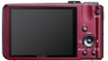
索尼 DSC-HX7V
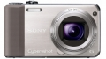
索尼 DSC-HX7V
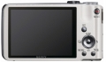
索尼 DSC-HX7V
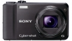
索尼 DSC-HX7V
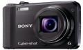
索尼 DSC-HX7V
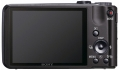
索尼 DSC-HX7V
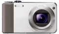
索尼 DSC-HX7V
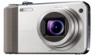
索尼 DSC-HX7V
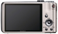
索尼 DSC-HX7V